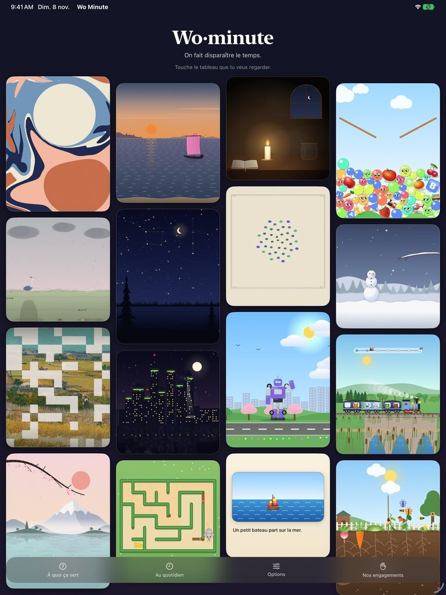
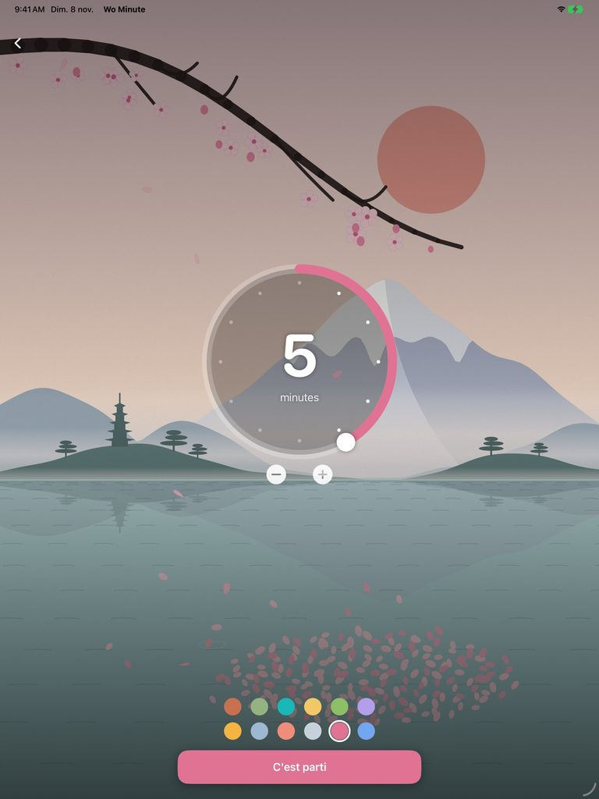

On fait disparaître
le temps.
Le temps ne s'affiche pas : il se regarde. Un tableau vivant donne aux yeux quelque chose à suivre — et au temps, une forme qu'on peut accompagner plutôt que subir.
Quand l'attente déborde, il faut un point d'ancrage.
Certains moments demandent quelque chose à quoi se raccrocher : une transition entre deux activités, une émotion qui monte, une attente qui s'étire. Un tableau qui avance doucement donne aux yeux un appui et au corps le temps de redescendre.
Pas de chiffres qui pressent, pas d'écran qui crie : un petit monde qui avance, et qui montre que ça avance.
Seize tableaux vivants, calculés en direct.
Chaque tableau est une petite histoire qui se déroule pendant le décompte — jamais une vidéo qui boucle. La mer se couche au soleil, une averse remplit sa clepsydre, une bougie se donne, la neige bâtit un bonhomme, une toile se peint tesselle par tesselle, une ville se filme de nuit, un robot se transforme en seize choses. Un cerisier perd un pétale par seconde sur un étang, une souris cherche son fromage dans un labyrinthe et nous jette parfois un regard curieux, un livre s'écrit mot à mot, des gouttes d'encre en étoile se mêlent sous un pinceau. Un petit train emmène ses passagers jusqu'au terminus, un potager pousse de la graine à la récolte. Plus le minuteur est long, plus il s'y passe de choses.
On ne les nomme pas : on les regarde.
Images réelles de l'app, filmées sur iPad.
Deux gestes, et le temps disparaît.

Touche un tableau.
L'accueil est une galerie : les tableaux vivants flottent sur le mur. On choisit ce qu'on veut regarder, pas un chiffre.

Tourne l'anneau.
De 1 à 12 minutes, une note à chaque cran. Une couleur, si on veut : le tableau change sous les yeux. Puis « C'est parti ».
Pose l'appareil.
Le tableau fait le reste. Aucun chiffre ne défile : on voit que ça avance, et quand c'est fini.
Un repère visuel du temps, au service de l'accompagnement.
Wo Minute est conçue par un intervenant en réadaptation, à partir du geste quotidien. En classe, en centre de jour, en clinique ou à la maison, elle rend le temps concret et apaisant — un appui pour accompagner, jamais un outil qui contraint.
Transitions
Annoncer et adoucir le passage d'une activité à l'autre. Le tableau avance, le changement se voit venir.
Retour au calme
Quand les émotions montent, un mouvement lent donne aux yeux un point d'ancrage et au corps le temps de redescendre.
Attendre autrement
Une attente difficile devient un moment à regarder. On voit ce qui reste, on voit que ça avance.
Un livre qui s'écrit pendant qu'on attend.
Six petites histoires illustrées s'écrivent mot à mot, en grosses lettres ; le mot qui arrive est surligné, et chaque mot important fait naître son image — le chat paraît quand on lit « chat ». Avec le son, une voix lit chaque phrase. Une histoire toutes les deux minutes environ, chacune avec sa fin.
En français et en anglais, selon la langue de l'appareil.
Chaque tableau a sa musique.
Composée en direct sur l'appareil, au rythme du tableau : le ressac sous le voilier, la berceuse de la veillée, les gouttes de l'averse qui passent du mineur au majeur quand la couleur revient, une gamme japonaise sous le cerisier, une note de harpe pour chaque mot du livre, le sifflet du petit train à chaque départ, une goutte pour chaque pousse du potager. Une fanfare quand le robot se transforme, une autre quand la souris trouve son fromage.
Elle joue même en mode silencieux : on la baisse, ou on la coupe dans les Options.
Au quotidien aussi.
Choisissez un tableau, posez l'appareil, laissez-le faire le reste.
Rien à cacher, rien à collecter.
Sur l'App Store.
Wo Minute est gratuite, sur iPhone et iPad. Une question ? Écrivez-nous.
Questions fréquentes
Le minuteur sonne-t-il si l'écran est éteint ?
Oui, si vous avez autorisé les notifications au premier lancement. Sinon : Réglages ▸ Wo Minute ▸ Notifications.
Y a-t-il du son ?
Deux choses. Chaque tableau a sa musique, composée en direct ; elle joue même en mode silencieux, et se coupe dans les Options. À la fin, une alerte au choix : un son, une vibration ou une annonce vocale.
Combien de temps peut durer un minuteur ?
De 1 à 12 minutes, une minute par cran de l'anneau. Plus il est long, plus il se passe de choses dans le tableau.
Combien y a-t-il de tableaux ?
Seize : la goutte d'encre, le voilier, le cerisier, la veillée, le labyrinthe, la pluie, les balles, le livre, les étoiles, la spirale, les flocons, l'atelier, la ville, le robot, le petit train et le potager. Chacun change d'une séance à l'autre.
Pourquoi les tableaux n'ont-ils pas de nom ?
On ne les nomme pas : on les regarde. Pour qui ne voit pas l'écran, VoiceOver dit le nom de chaque tableau.
Les balles tombent trop vite pour qu'on ait le temps de les nommer.
Dans les Options, la vitesse de chute se ralentit. Il en tombe toujours une par seconde ; touchez-en une, une voix dit son nom.
Est-ce que ça fonctionne hors ligne ?
Entièrement. Aucune connexion n'est requise, aucune donnée n'est envoyée.
Une autre question ?
Écrivez à support@wominute.com — on répond en quelques jours.